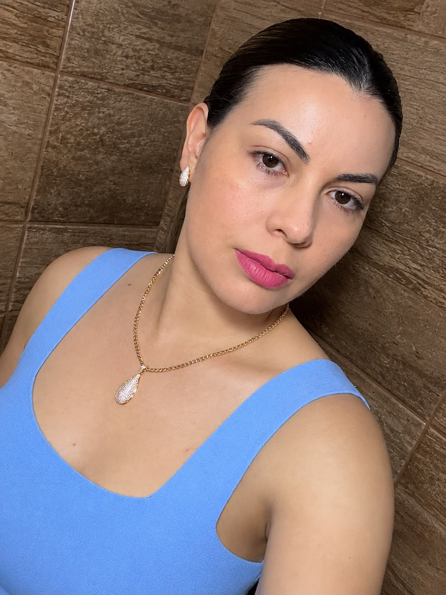

A beleza está nos detalhes. Presentes que brilham no Natal.
Descubra uma seleção especial de semijoias pensadas para valorizar sua essência, elegância e personalidade com todo o cuidado e afeto. Descubra semijoias para presentear quem você ama ou para brilhar nas festas de fim de ano, com todo o cuidado e afeto de sempre.
Conheça as peçasColeção em Destaque
Toque na foto ou no nome de uma peça para ver o resumo completo e conversar sobre ela.
Como Comprar
O atendimento é feito de forma pessoal pelo WhatsApp.
- EscolhaNavegue pela coleção e toque na peça para ver os detalhes.
- ConsulteToque em “Consultar no WhatsApp” para confirmar a disponibilidade.
- CombineAlinhe com a Aline o pagamento e a entrega da sua peça.
WhatsApp:


Olá, sou a Aline Borges
Professora, mãe, esposa e, agora, empreendedora no universo das semijoias. Transformei uma paixão antiga em propósito: levar mais brilho, elegância e autoestima para o dia a dia das mulheres através de peças escolhidas com carinho.
Cada peça que você encontra por aqui carrega uma intenção: celebrar momentos, realçar a sua beleza natural e contar histórias através do brilho.
Cuidado e Confiança em Cada Peça
A Aline Joias nasceu de uma paixão antiga e do compromisso com a qualidade, a autenticidade e o atendimento humanizado. Cada peça passa por uma seleção cuidadosa para que você receba não apenas um acessório, mas um símbolo de afeto e bom gosto.
Seleção Cuidadosa
Peças escolhidas uma a uma, com atenção ao acabamento.
Atendimento Único
Suporte dedicado e consultoria personalizada para cada cliente.